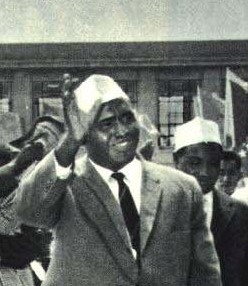

Cabdirashiid Cali Sharmaarke (Af Carabi:عبد الرشيد علي شرماركي) wuxuu dalka Soomaaliya madaxweyne ka ahaa taariikhdu marka ay ahayd 10 Luuliyo sanadkii 1967. Waxaa la dilay 15kii Oktoobar 1969kii.
Cabdirashiid Cali Sharma'arke wuxuu ku dhashay degmada Xaradheere ee gobolka Mudug sanadkii 1919.
Wuxuu dugsiga Quraanka iyo waxbarashadiisii dhameeyay sanadkii 1936dii, wuxuu bilaabay in uu noqdo ganacsade ka dibna shaqaale ka shaqeeya howlaha maamulkii Talyaaniga ee maxmiyadda, wuxuu noloshiisa ku qaatay wixii intaas ka dambeeyay magaalada Muqdisho.
Wuxuu ka mid noqday ururkii dhalinyarada Soomaaliyeed ee loo yaqaanay Somali Youth League(SYL) waxyar ka dib markii la aasaasay sanadkii 1943dii, wuxuuna ku biirey maamulkii Ingiriiska ee Soomaaliya.
Wuxuu waxbarashadiisii dugsiga sare dhameystay 1953dii, isagoo wali la shaqeynaya maamulkii maxmiyada ee Talyaaniga, wuxuuna helay deeq waxbarasho ah dalka Talyaaniga gaar ahaan Jaamacadda Rooma “La Sapienza”, halkaas oo uu ka qalin jabiyay sanadka markuu ahaa 1958dii, wuxuuna sanad ka dib ku soo laabtay dalka Soomaaliya, ka dibna waxaa loo doortay in uu noqdo xubin ka tirsan Golihii lagu magacaabi jirey Somali Legislative Assembly.
Markii ay Soomaaliya noqotay dal madaxbannaan 1dii bishii July 1960kii, wuxuu noqday Ra’iisul wasaarihii ugu horreeyay ee ay yeelato dalka Jamhuuriyadda Soomaaliya.
Wuxuu markiiba bilaabay in uu dadaal u galo sidii uu guulaysan lahaa dhinaca arrimaha dibadda, wuxuuna dalka Ra’iisul Wasaare ka ahaa illaa 1964tii.
Ka dib doorashooyin dalka ka dhacay wuxuu mar kale noqday xubin ka tirsan baarlamaanka Soomaaliya. Sanadkii 1967dii doorashooyin la qabtay laguna dooranayay madaxweyne cidda ka noqoneysa dalka ayaa loo doortay in uu dalka Madaxweyne ka noqdo, ka dib markii doorashooyinkii dhacay uu kaga guuleystay madaxweynihii xilka kaga horreeyay ee Soomaaliya Aadan Cabdulle Cusmaan “Aadan Cadde”, wuxuuna xafiiska kala wareegay isla sanadkaas oo ku beegan 10kii Luuliyo 1967kii.
Labo sano ka dib markii uu dalka Madaxweyne ka noqday ayaa askari ka tirsan ciidamadii ilaalada ka hayay ayaa toogasho ku dilay 15kii bishii Oktoobar 1969kii, isagoo booqanaya gobolada Waqooyiga Soomaaliya halkaas oo ay abaaro ka dhaceen.
Lix maalmood ka dib markii dilku dhacay ayay ciidamadii dalka talada xoog kula wareegeen iyada oo wali lagu jiro baroordiiqda madaxweynahaasi la dilay. Waxaana 21kii Oktoobar 1969kii dalka Madaxweyne ka noqday S/Gaas Max’ed Siyaad Barre oo ka tirsanaa Ciidanka Xoogga dalka Soomaaliya. wuxu tagay
Allaha unnaxariisto.